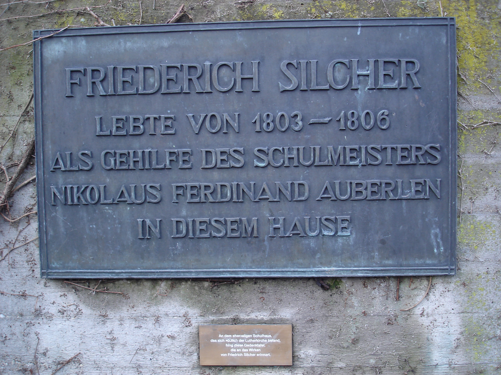
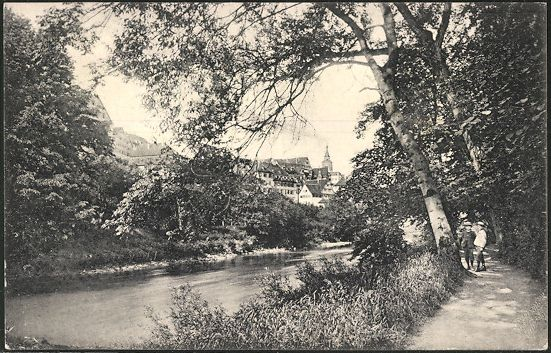

<?xml version="1.0" encoding="UTF-8"?>
<div xmlns="http://www.w3.org/1999/xhtml" data-template="templates:surround" data-template-with="templates/view-database.html" data-template-at="register">
    <div class="column">
        <div class="page-header">
            <h1 class="text-center">Ortsverzeichnis</h1>
        </div>
        <div class="container">
            <div id="map"/>
            <script>
            let map = L.map('map').setView([48.72, 9.20], 10);
                L.tileLayer('https://api.mapbox.com/styles/v1/{id}/tiles/{z}/{x}/{y}?access_token={accessToken}', {
                attribution: 'Map data <a href="https://www.openstreetmap.org/copyright">OpenStreetMap</a> contributors, Imagery © <a href="https://www.mapbox.com/">Mapbox</a>',
                maxZoom: 18,
                id: 'mapbox/streets-v11',
                tileSize: 512,
                zoomOffset: -1,
                accessToken: 'pk.eyJ1Ijoid2FsZG1laXN0ZXI5NiIsImEiOiJjazhlb3ZmNGowMXVpM29teHM0dzZmZzE5In0.jw2_GooJkERyoy7uCiv5xQ'
                });
            let map4 = L.tileLayer('https://maps.wikimedia.org/osm-intl/{z}/{x}/{y}{r}.png', {
        	    attribution: '<a href="https://wikimediafoundation.org/wiki/Maps_Terms_of_Use">Wikimedia</a>',
        	    minZoom: 1,
          	    maxZoom: 19
                });
            let CartoDB_VoyagerLabelsUnder = L.tileLayer('https://{s}.basemaps.cartocdn.com/rastertiles/voyager_labels_under/{z}/{x}/{y}{r}.png', {
            	attribution: '<a href="https://www.openstreetmap.org/copyright">OpenStreetMap</a>',
            	subdomains: 'abcd',
            	maxZoom: 19
            }).addTo(map);
            
            
            L.MakiMarkers.accessToken = "pk.eyJ1Ijoid2FsZG1laXN0ZXI5NiIsImEiOiJja2o2N3djbjY0Y29wMnluNGE3Y3ppcGJjIn0.XOsRoIvgSdMyUZ-ROixLKw"; 
            var residence = L.MakiMarkers.icon({icon: "building", color: "#4863A0", size: "l"});
            var cementery = L.MakiMarkers.icon({icon: "cemetery", color: "#888888", size: "l"});
            var contemporary = L.MakiMarkers.icon({icon: "circle", color: "#00BFFF", size: "l"});
            var museum = L.MakiMarkers.icon({icon: "museum", color: "#C46200", size: "l"});
            var music = L.MakiMarkers.icon({icon: "music", color: "#b0b", size: "l"});
            var theater = L.MakiMarkers.icon({icon: "theatre", color: "#b0b", size: "l"});
            var placeOfActivity = L.MakiMarkers.icon({icon: "town-hall", color: "f39f18", size: "l"});
            var teacher = L.MakiMarkers.icon({icon: "college", color: "#2E8B57", size: "l"});
            var memorial = L.MakiMarkers.icon({icon: "triangle", color: "#FFCC00", size: "l"});

            /* Lebensstationen */
            let geburtshaus = L.marker([48.7921743441545, 9.402996699070995], {icon: museum});
                geburtshaus.bindPopup('<b>Geburtshaus / Silcher-Museum Schnait</b> <br/>Im ehemaligen Schulhaus von Schnait wurde Silcher am 27. Juni 1789 als Sohn eines Schulmeisters geboren. <br/>' + '');
            let geradstetten = L.marker([48.81043841969395, 9.443206952682196], {icon: residence});
                geradstetten.bindPopup('<b>Geradstetten</b> <br/>1803 ging Silcher als Lehrjunge nach Geradstetten.');
            let fellbach = L.marker([48.82113493337118, 9.267097774258206], {icon: residence});
                fellbach.bindPopup('<b>Fellbach</b> <br/>1806 erhielt Silcher eine Lehrstelle bei dem Lehrer und Organisten Nikolaus Ferdinand Auberlen. <br/>' + '');
            let schorndorf = L.marker([48.801492701267954, 9.529475160644562], {icon: residence});
                schorndorf.bindPopup('<b>Schorndorf</b> <br/>1806 kam Silcher als Lehrgehilfe nach Schorndorf, wo er außerdem als Hauslehrer des Kreishauptmanns Freiherr Joseph Friedrich Anton von Berlichingen wirkte.');
            let ludwigsburg = L.marker([48.89418186594085, 9.190759454287448], {icon: residence});
                ludwigsburg.bindPopup('<b>Ludwigsburg</b> <br/>Als der Freiherr von Berlichingen 1809 nach Ludwigsburg übersiedelte, verschaffte dieser Silcher eine Anstellung an der dortigen Mädchenschule.');
            let stuttgart = L.marker([48.7751100618283, 9.184025901968832], {icon: residence});
                stuttgart.bindPopup('<b>Stuttgart</b> <br/>Silcher folgte dem Komponisten Conradin Kreutzer nach Stuttgart und arbeitete dort als Klavierlehrer. Während seines zweijährigen Aufenthalts in Stuttgart wohnte er im Haus der Klavierbauer <em>Dieudonné &amp; Schiedmayer</em>.');
            let tübingen = L.marker([48.52194719948124, 9.057743317663373], {icon: residence});
                tübingen.bindPopup('<b>Wohnhaus Tübingen</b> <br/>Von 1818 bis zu seinem Tod 1860 wohnte Silcher in dem frisch fertiggstellten Haus in der damaligen Wilhelmstraße 1 (heute zwischen Schreibwarenladen <em>Schimpf</em> und <em>Museum</em>). 1959 wurde das Haus zugunsten des Verkehrsflusses abgerissen.' + '');
            let stadtfriedhof = L.marker([48.526583582910646, 9.054064218952696], {icon: cementery});
                stadtfriedhof.bindPopup('<b>Begräbnis</b> <br/>Friedrich Silchers Grab befindet sich auf dem Tübinger Stadtfriedhof.' + '');
            /* Denkmäler */
            let denkmal1 = L.marker([48.524939038608316, 9.058543091681118], {icon: memorial});
                denkmal1.bindPopup('<b>Denkmal im <em>Silcherwäldchen</em> </b> <br/> <q>1874 wurde ihm [Silcher] in Tübingen erstmals ein Denkmal in Form eines klassizistischen Obelisken mit einem marmornen Portraitrelief errichtet, das in einer Grünanlage, dem sogenannten <em>Silcherwäldchen</em> hinter der Neuen Aula stand.</q> 1928 musste das Denkmal im Zuge des Ausbaus der Aula zu einer dreiflügeligen Anlage mit Ehrenhof versetzt werden.' + '');
            let denkmal2 = L.marker([48.51749862295771, 9.05103024959249], {icon: memorial});
                denkmal2.bindPopup('<b>Denkmal im <em>Seufzerwäldchen</em> </b> <br/>1928 wurde das Silcherdenkmal restauriert und vom Rücken der Neuen Aula auf die Neckarinsel verlegt, <q>an eine Stelle am Ende der Platanenallee, zu Beginn und südlich des Wöhrdwäldchens, des sogenannten Seufzerwäldchens, am Ufer des Flutkanals des Neckars.</q> Im Juni 1939 wurde es in Zusammenhang mit der Grundsteinlegung des neuen Denkmals entfernt.' + '');
            let denkmal3 = L.marker([48.51797098375457, 9.051934414822988], {icon: memorial});
                denkmal3.bindPopup('<b>Denkmal auf der Neckarinsel</b> <br/>1939 wurde zum 150sten Geburtstag Silchers der Bau eines neuen Denkmals beschlossen, welches im April 1941 von dem Bildhauer Wilhelm Julius Frick errichtet wurde. Aufgrund seiner Vergangenheit ist das monumentale Denkmal umstritten, zwei Tafeln von 1995 und 2016 erläutern das Denkmal. <q>Am 5. Januar 2020 wurde das Silcher-Denkmal von Bürgern Tübingens und Mitgliedern des Zürcher Theaterkollektivs <em>Neue Dringlichkeit</em> als <q>Mahnmal gegen die Vereinnahmung der Künste durch rassistische und nationalistische Kräftel</q> in einer künstlerischen Performance umgewidmet.</q>' + '');
            /* Benennungen */
            let silcherstraße = L.marker([48.524411243444185, 9.058694229398045], {icon: memorial});
                silcherstraße.bindPopup('<b>Silcherstraße</b> <br/>1840 angelegt' + '');
            let silcherschuleAlt = L.marker([48.5226974913902, 9.048856996764997], {icon: memorial});
                silcherschuleAlt.bindPopup('<b>Alte Silcherschule</b> <br/>(1892 gebaut) Ehemals Alte Silcherschule in der Kelternstraße 23.' + '');
            let silcherschuleNeu = L.marker([48.52238808377829, 9.049654378322131], {icon: memorial});
                silcherschuleNeu.bindPopup("<b>Neue Silcherschule</b> <br/>Seelhausgasse 31, heute das Haupthaus der <em>Grundschule Innenstadt</em> mit der <em>Silcher Halle</em> als Sporthalle.");
            let silcherbund = L.marker([48.51003746540543, 9.07928682474966], {icon: music});
                silcherbund.bindPopup("<b>Silcherbund Tübingen 1865 e. V.</b>");
            /* Zeitgenossen */
            let uhland = L.marker([48.51959766199719, 9.058260315589353], {icon: contemporary});
                uhland.bindPopup('<b>Ludwig Uhland</b> <br/>lebte mit seiner Frau Emilie ab 1837 in einem klassizistischen Gebäude an der Ecke Mühlstraße / Gartenstraße. 1944 wurde es bei einem Bombenangriff zerstört.' + '');
                
            var markers = L.markerClusterGroup({maxClusterRadius: 50});
                markers.addLayer(tübingen);
                markers.addLayer(stadtfriedhof);
                markers.addLayer(denkmal1);
                markers.addLayer(denkmal2);
                markers.addLayer(denkmal3);
                markers.addLayer(silcherstraße);
                markers.addLayer(silcherschuleAlt);
                markers.addLayer(silcherschuleNeu);
                markers.addLayer(silcherbund);
                markers.addLayer(geburtshaus);
                markers.addLayer(geradstetten);
                markers.addLayer(schorndorf);
                markers.addLayer(fellbach);
                markers.addLayer(ludwigsburg);
                markers.addLayer(stuttgart);
                markers.addLayer(uhland);
                map.addLayer(markers);
            
            var legend = L.control({position: 'topright'});
            legend.onAdd = function (map) {
                var div = L.DomUtil.create('div', 'legend');
                div.innerHTML +=  '<i style="background: #4863A0">    </i>' + 'Wohnort' + '<br/>'
                div.innerHTML +=  '<i style="background: #f39f18">    </i>'   +  'Wirkungsort' + '<br/>'
                div.innerHTML +=  '<i style="background: #b0b">    </i>'   +  'Mus. Institution' + '<br/>'
                div.innerHTML +=  '<i style="background: #C46200">    </i>'  + 'Museum' + '<br/>'
                div.innerHTML +=  '<i style="background: #FFCC00">    </i>'   +  'Denkmal' + '<br/>'
                div.innerHTML +=  '<i style="background: #00BFFF">    </i>'   +  'Zeitgenosse'

                return div;
            };
            legend.addTo(map);
            </script>
        </div>
    </div>
</div>